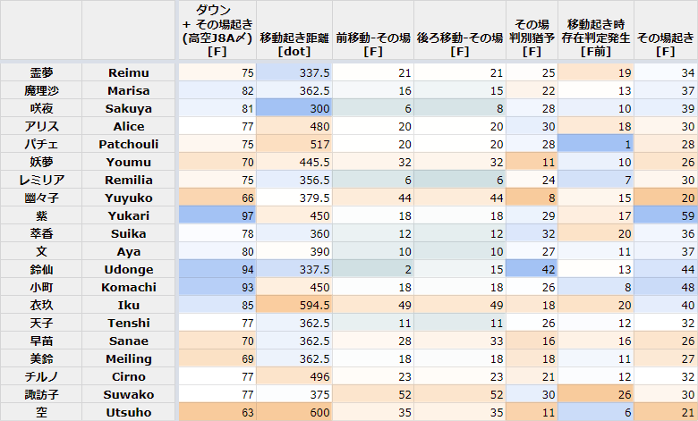

起き上がりデータ¶
元になっている Google Spread Sheet は公開準備中…
ダウン+その場起き時間 [F]¶
設置人形の種類を決める基準その1。
アリスは人形設置猶予が大事なので、起き上がりモーションの時間だけでなくダウン時間を加味する必要がある。
ダウン時間のキャラ差がある部分、ない部分についての詳細は :ref:<data_small_bound> を参照。
表はアリスAAAA>(2A>)3A(3)>9hj>JA>J8A 〆時のもの。
移動起き距離 [dot]¶
設置人形の種類を決める基準その2。
距離毎に専用の構築が必要。たとえば、対衣玖で4C>J2Cは見てから移動起きされて4Cをガードさせられない。
基本的に短いほうがアリスにとって有利だが、各距離ごとにしっかりパターン構築できていればカバー可能。
移動起き時間 - その場起き時間 [F]¶
前移動起き
人形設置後、打撃の重ね方を決める基準になる。
移動起き距離が同じでも、この差が短いキャラ、長いキャラでは別のパターン構築が必要。
後ろ移動起き
差が大きいキャラの場合、その場起き読みに後ろ移動起きをされたときに別パターン構築が必要。
アリスDA〆の場合は相手の向きが反転するため、前移動起き≠中央移動起きであることに注意する。
その場起き 判別猶予 [F]¶
短いキャラほど、アリス側は一点読み起き攻めが必要。
10+11=21F以上の相手は、理論上その場起きを見てから66JAが可能。6D>JAは27F。実用的な高度の66JAも27F程度。
30Fを超えているキャラは積極的に弱点として突いていきたい。
10F~20F台のキャラは、66/6Dまで入れ込み>移動起きをみてから方向転換という起き攻めなら両対応できるかも。
移動起き上がり後存在判定発生 [F前]¶
移動起きに対する歩きめくりのしやすさ。
数字が小さいほど、アリスとの表裏の位置関係が起き上がり直前まで決まらないので、歩きめくりを通しやすい。
体感で、15Fあたりからは工夫なしでのめくりは厳しい。
その場起き時間 [F]¶
これが短いキャラはぎりぎりまで移動起き上がり方向入力を受け付けるので、設置位置を見てから後出しで動かれる。(理論上は...。)